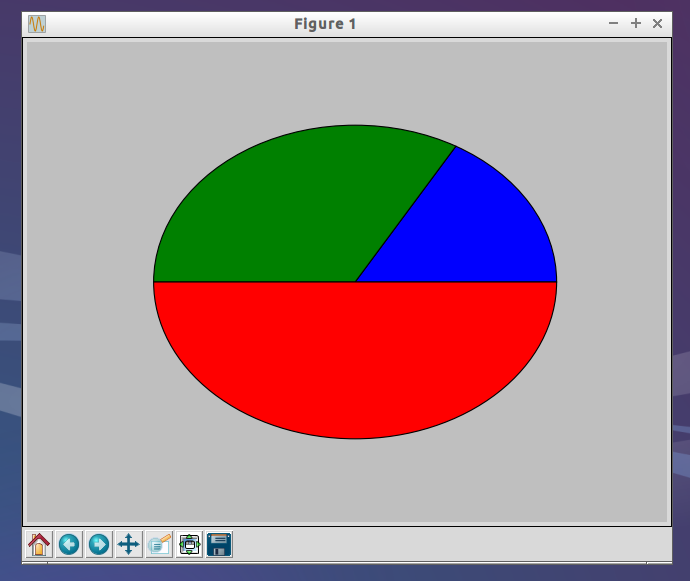

System Requirements
This was done on a system with the following specifications:
- Lubuntu 14.04 (which is pretty much Ubuntu 14.04 underneath)
- Python 2.7.6
You’ll probably do fine following the instructions below if you’re using a system with similar specifications.
Assumptions
We’ll be installing matplotlib 1.4.3 .
We assume that there is the following folder hierarchy somewhere on your system:
your_repo
|--- requirements.txt
|--- venv
where:
your_repois a folder that you have some Python code using matplotlibvenvis a folder created usingvirtualenv venv; you’ll activate the virtualenv in theyour_repofolder using the. venv/bin/activatecommandrequirements.txtcontains a line to installmatplotlib. For me, this line ismatplotlib==1.4.3
Commands to run
sudo apt-get -y build-dep matplotlib
cd your_repo
. venv/bin/activate
pip install -r requirements.txt
The magic is in the sudo apt-get -y build-dep matplotlib line, which will install all the build dependencies for matplotlib.
Check that matplotlib has been installed properly
Save the following code into check_matplotlib.py in the your_repo folder:
import matplotlib.pyplot as pyplot
pyplot.pie([1, 2, 3])
pyplot.show()
Activate the virtualenv if you have not, and run python check_matplotlib.py. You should see something like this:

And voila, there you have it =)
Credits
Based on this answer on Stack Overflow by HiddenGhost.
Motivation
Was reading Section 2.5 of Think Stats, wanted to install matplotlib on a virtualenv but nothing showed up when I ran the example code in the book. Googled around, tried several answers on Stack Overflow which didn’t work or suggested doing a system-wide installation, but didn’t want to. I have no idea why I tried part of Hidden Ghost’s answer eventually, but then things worked out, so yea =)
And I noticed that I’ve posted 5 entries (including this one) since June, with 3 entries (including this one) in July. Might I be posting too much? Haha… there’s like 1 or 2 more entries in the pipeline.